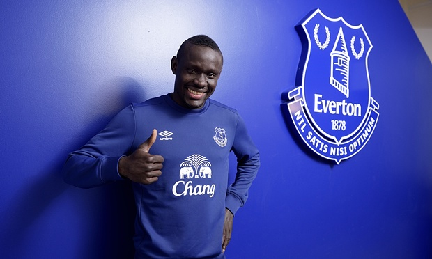
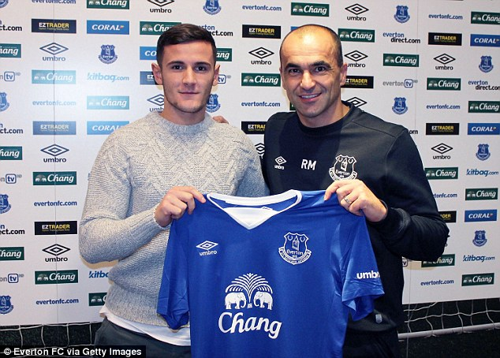
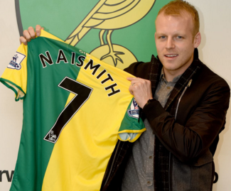
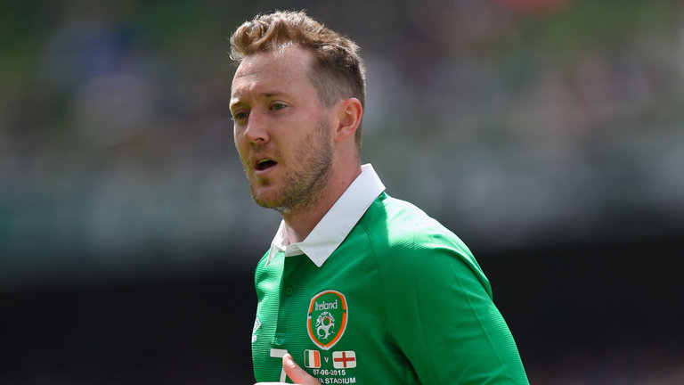

January Club Signings
This January transfer window brought forth the signing of two attacking players: Senegalese striker Oumar Niasse of Lokomotiv Moskow, and Grasshoppers Zürich star Shani Tarashaj.

Oumar Niasse
Niasse joined English club Everton on 1 February 2016, for a fee of around £13.5m.

Shani Tarashaj
On 7 January 2016, Tarashaj joined Everton on four-and-a-half year deal. He was loaned back to Grasshopper, until the end of the season so that he could complete his national service

Steven Naismith: to Norwich City
On 19 January 2016, Naismith joined Norwich City on a three-and-a-half-year deal.[94] He made his debut four days later, scoring Norwich's second goal in a 5–4 home defeat to Liverpool.

Aiden McGeady: On Loan to Sheffield Wednesday
Due to a lack of playtime, Manager Roberto Martinez loaned out the skillfull winger to the Championship side until the end of the season.
January club departures
This transfer window saw the departure of some of Everton's faithfull footballers such as: Steven Naismith and Aiden McGeady
Contact Info
if you wish to contact me for more information on the greatest football club in the land, you can reach me at my FaceBook and Twitter shown to my left and right